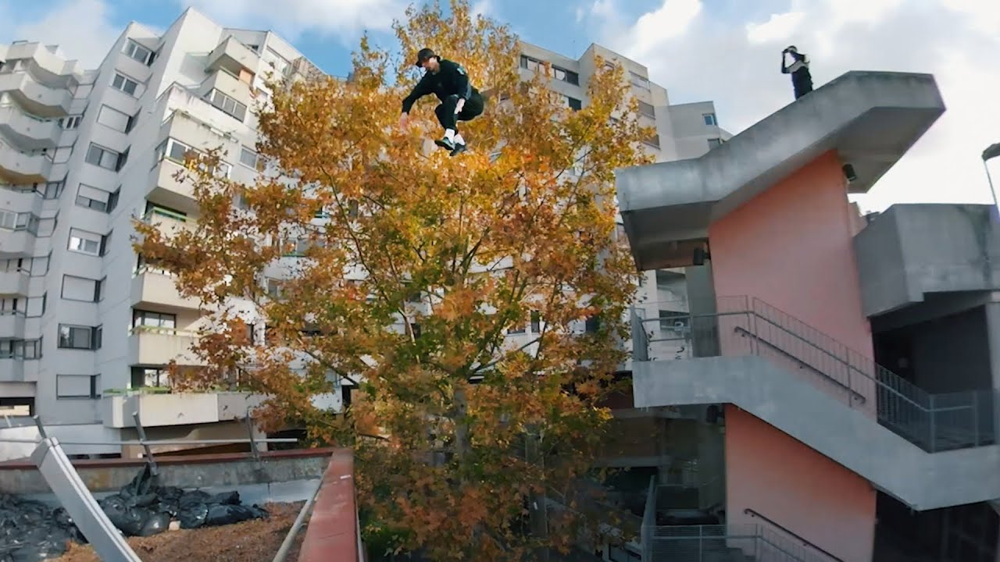
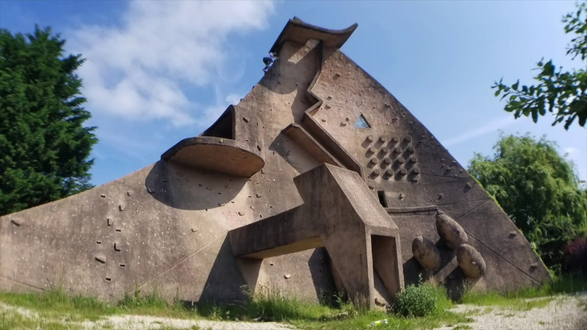

1. IMAX:
IMAX (images ci-dessus) est un spot iconique de parkour se situant à Londres. Grâce à son achitecture assez complexe, de nombreux sauts sont disponibles aux tracers
(athlètes de pakour).
2.spot real:
spot real est en fait un salle de parkour en intérieur qui se trouve à Lisbonne.Spot real est aussi une académie de parkour.

3. Manpower gap:
Le manpower gap est situé à paris sur le toit de l'agence manpower group. A ce jour il est le plus grand saut de parkour connu, ses dimensions sont de 3 mètres à sauter horizontallement et 4 mètres de haut à sauter.

4. Lisses:
Lisses (ou dame du lac) est le lieu de naissance du parkour situé au bord de la seine.D'une hauteur de 17m ce monument à la base était une oeuvre d'art datant de 1975 réalisée par l'artiste Pierre Szélely.

5. Central park:
Central parks est une forêt au centre de Manhattan. Les arbres et rochers offrent de nombreux sauts.